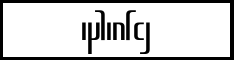

|
환경서체
환경서체는 2010년 이후의 공식적인 서체입니다. 배너를 클릭하면 다운로드할 수 있습니다. 자유롭게 사용하십시오.
nias님의 글꼴이 포함되어 있습니다. 본가는 이곳이며, 다양한 글꼴을 다운로드할 수 있습니다.
각 서체의 가독성은 kardinal과 비교하여 정해져 있습니다.
●기본서체
환자에는 다음의 5가지 기본서체가 있습니다. 자세히는 플레딜란스를 읽어보십시오.
・kardinal

개요 : 카디날(코스모스). 환자의 원형이 되는 서체. 선폭이 항상 일정. 아래 lantia와 비교할 때는 tina라 부름.
가독성 : 좋음
용도 : 환자의 모양을 가르칠 때 사용한다.
・alblant

개요 : 알블란트(꽃무릇). 출판인쇄업계의 표준서체.
가독성 : 좋음
용도 : 신문, 서적, 잡지, 웹사이드 등의 본문에 사용한다.
・fenlil

개요 : 펜릴(금목서). 표준적인 필기체
가독성 : 나쁨
용도 : 신의 언어, 아르바자드인에게 익숙지 않은 외국어, 손으로 쓴 문서 등을 표기하는 데 쓰이는 경우가 있다. 고급감과 유려함을 표현하는 데 사용된다. a의 점과 x의 막대는 손글씨일 경우에는 없어도 된다.
・nalnia

개요 : 날니아(라벤더). 표준적인 이탤릭체
가독성 : 보통
용도 : 루티아어 등 외국어 표기에 쓰이는 경우가 있다. 디자인의 세계에서는 펜릴과 올리비아의 중간적인 존재.
・olivia

개요 : 올리비아(장미). 표준적인 고딕체
가독성 : 나쁨
용도 : 역사적인 중후함이나 장엄함, 화려함을 표현하는 데 사용된다.
●파생서체
・lantia
개요 : 티나에 대사를 붙인 것. 슬랩 세리프. 본문 등에 사용한다.
가독성 : 좋음
용도 : 범용. 무엇에나 사용 가능.
・inje

개요 : 초승달문자. 둥그렇고 부드러운 인상. 달을 이미지한 대문자 파트가 화사하다.
가독성 : 좋음
용도 : 부드럽고 아름다운 인상을 줄 때 사용한다.
・defans

개요 : 정사각형을 기준으로 한 크기의 문자. 약간 작음
가독성 : 보통
용도 : 약간 기계적인 인상이 있다.
・fialis

개요 : 약간 세로로 길고 슬림한 글자. 작고 날카로운 인상이 있다.
가독성 : 보통
용도 : 아웃라인을 따서 로고 등에 사용하면 매우 보기 좋다.
|